After completing this lesson, you will be able to:
Data streaming does not always use spatial data. Many data streams are actually non-spatial. For example, an air quality sensor may be fixed in place and report air quality levels at regular intervals. The data may remain non-spatial throughout the analysis, or you might enrich it with spatial data for further processing or analysis. If your stream includes multiple air quality sensors, you can use a unique sensor ID to add sensor locations and generate maps of air quality levels.
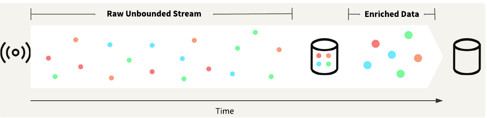
The City of Vancouver fleet location stream reports vehicle locations using GeoJSON. Our workspace creates geometry from the GeoJSON for spatial analysis on the vehicles.
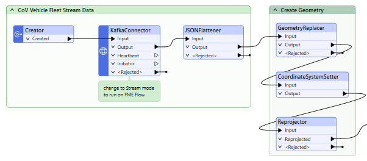
`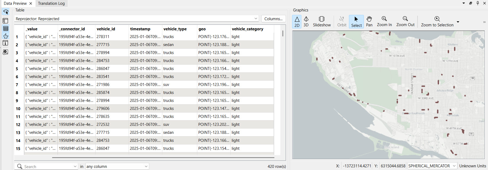
One of the simplest ways to work with spatial stream data is to filter records by location, which typically involves reading another spatial dataset and then clipping or joining your stream data to it. You may want to trigger an alert if a stream data record remains within a particular area for a specified amount of time.
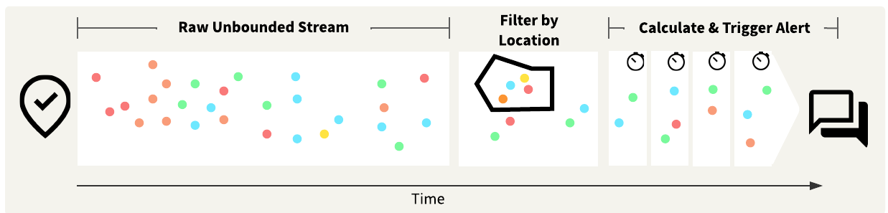
In the exercise below, we will filter the City of Vancouver fleet data stream by location. We're only interested in vehicles outside the City of Vancouver boundary, so we will use a SpatialFilter to filter out vehicle locations within the city boundary and continue processing and analyzing the remaining records.
You may create buffers around stream data records or static data to compare the stream data against. You usually use buffers to determine if a record is within a certain proximity to another record or records. You can use a buffer to filter stream data records that are inside, outside, or within a certain distance of the buffer location.
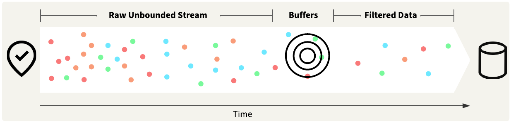
For example, you have stream data on trucks carrying hazardous materials. The trucks are supposed to stay at least 500 m from any schools or playgrounds. You would create a buffer around the schools and playgrounds and configure an alert to send if a truck's GPS location overlaps a buffered area.
You may also use geofences to analyze your stream data spatially. Static geofences work like location filtering: stream data records are filtered based on whether they fall within a specified spatial area. Dynamic geofences refer to spatial filtering on areas that may change frequently. You may create your geofences from static data sources or from the stream data itself.
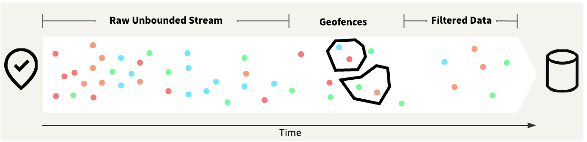
For example, ride-share apps rely on drivers reporting their location and dispersing themselves to be quickly accessible to their app users. If a cluster of app users is present without any drivers within a 1-kilometer radius, drivers are alerted to redistribute to better cover the area.
Jennifer only needs to send an alert if the trucks are outside of the City of Vancouver boundary. She's already set up a bookmark that reads the City of Vancouver boundary as a KML file. Next, clip the data and determine which vehicle records fall outside the boundary.
In this exercise, you will:
Continue with the same workspace open in FME Workbench from the previous exercise.
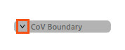
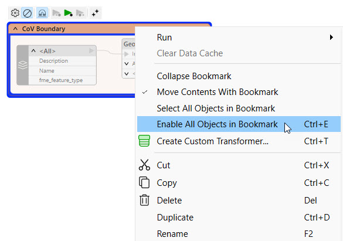
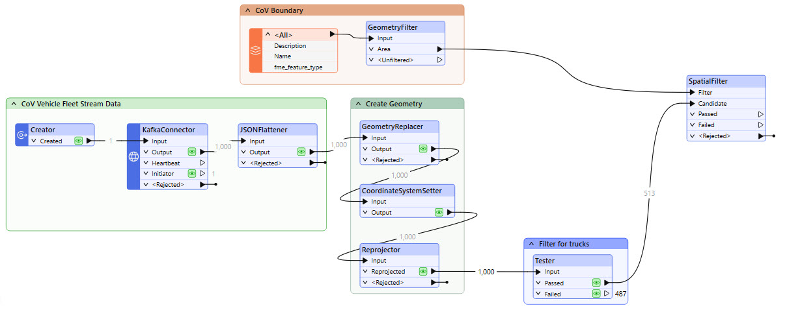
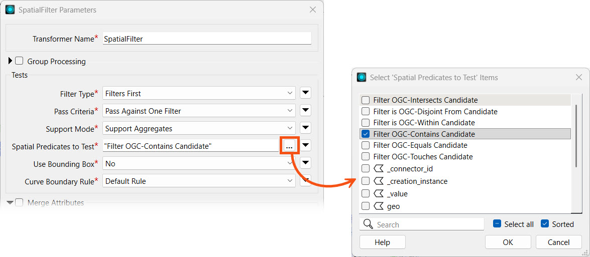
Your SpatialFilter parameters should look like this:
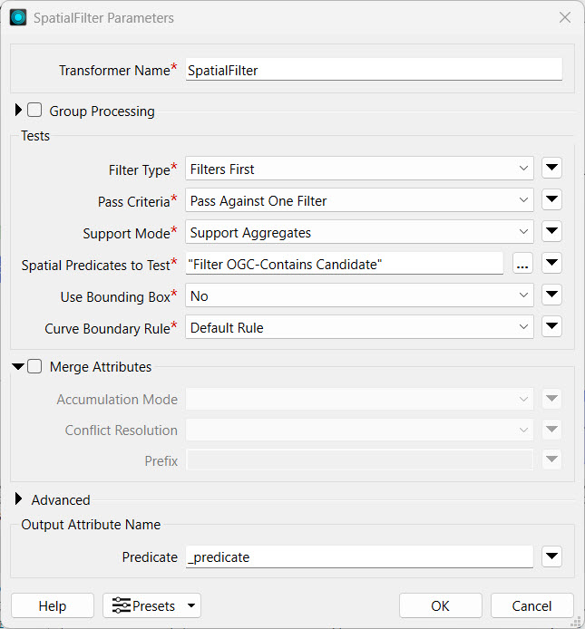
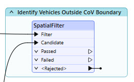
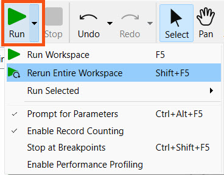
We rerun the entire workspace here instead of just running from the data caches because our SpatialFilter is set to receive Filters First. If you only run the uncached portions of the workspace, the SpatialFilter will reject features because the CoV Boundary records have not arrived at the SpatialFilter before the cached data from the Tester transformer arrives. The Creator transformer is also set to run any readers in the workspace before creating a record to run the KafkaConnector, which ensures the filters will arrive to the SpatialFilter before the streamed data records.
FME will run the transformers with data caches from the previous exercises again, then filter against the City of Vancouver boundary that it reads into the workspace. Some data goes through the Failed port; these are the trucks outside Vancouver.
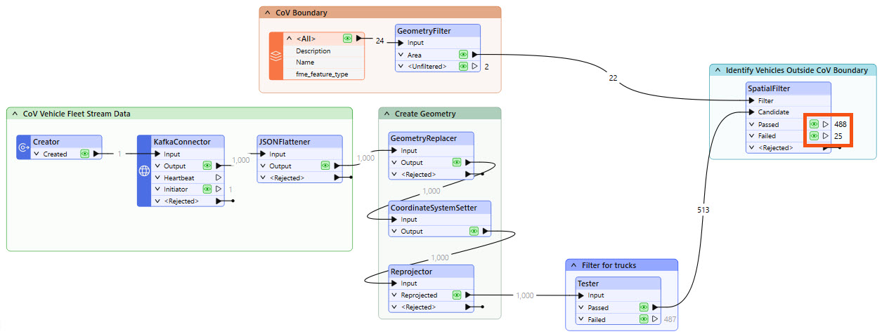
The exact record counts from that are sent through the Passed and Failed ports will differ from what is shown in the screenshot. Because our data is a continuous stream, different data records are received at varying times, so it is unlikely that your workspace record counts and those of others will match exactly.